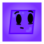

SMS '24 out now for IGMPosted on August 8, 2024 • Project Update
 Moved Back to Neocities! (v2.0)
Moved Back to Neocities! (v2.0)
Alongside the full release of version 2.0, this web site has officially moved back to ...Posted on August 3, 2024 • Site Update
 Web Site 2.0 Beta launch
Web Site 2.0 Beta launch
The beta version of this complete overhaul has launched! It's still quite a major ...Posted on August 1, 2024 • Site Update
 New album 'The S' out now
New album 'The S' out now
Instead of working on my games like usual, I though I'd take a small detour and work ...Posted on July 11, 2024 • Project Update
New album 'Thirteen' out nowPosted on June 3, 2024 • Project Update
 Minor Web Site updates
Minor Web Site updates
I thought I might let you all know about some small changes and new additions ...Posted on May 2, 2024 • Site Update
 Web Site 1.2 Update launch
Web Site 1.2 Update launch
Included in this new update is a fresh new layout, proper announcements, and ...Posted on April 14, 2024 • Site Update
Sid's Adventure | Widescreen Port release
Good morning everyone! While George 1.5 is currently being developed, I thought ...Posted on April 6, 2024 • Project Update
Widescreen ports of some games are available on my itch.io page.